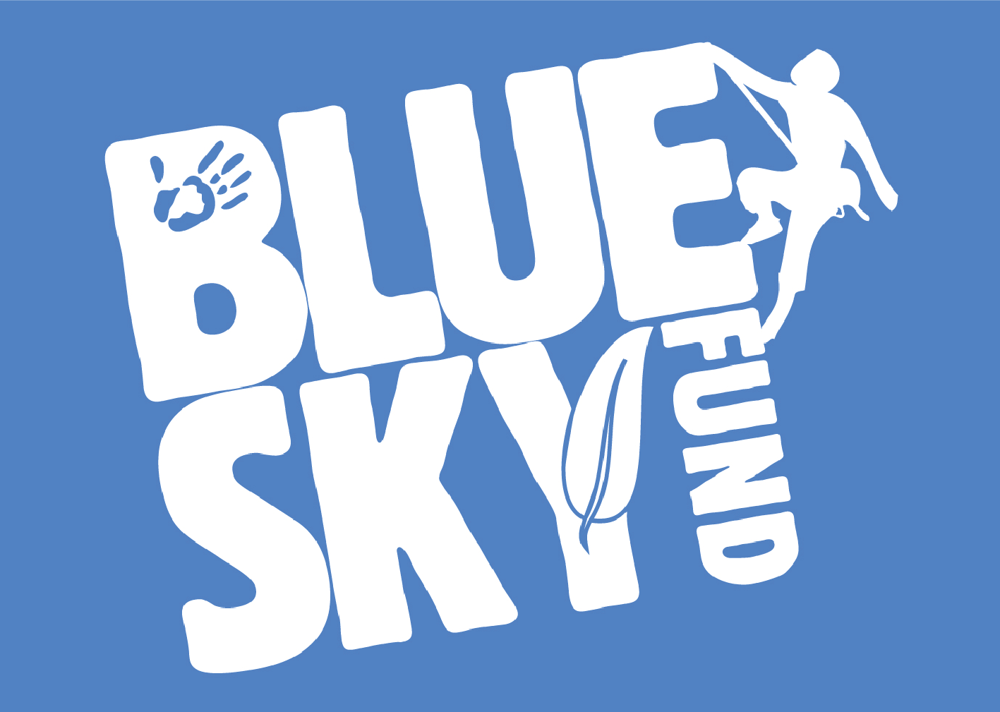

Blue Sky Fund
Team
- Jason Chen
- Jordan Stapinski
- Fang You
Opportunity
Both the indoor educational trips and outdoor field trips offered by Blue Sky Fund face challenges that would hinder the students’ learning experiences. Indoor trips sometimes end abruptly by unforeseen circumstances such as lockdowns and/or interrupted traffic. Outdoor trips could not always attract and direct the attention of younger students in their intended ways, and therefore could not guarantee the delivery of scientific knowledge. These problems make the use of the educators’ and students' time less effective, and thus call for new technical solutions.
Outcomes
Our team delivered a hosted custom website including the new feature developed by the team to our client (blueskyoppia.appspot.com). The new feature should be included in Oppia’s next official release. We also helped Blue Sky Fund and Oppia’s developers’ community to establish communication, and developed tutorials and design documents for Blue Sky Fund and open-source community.
Deliverables
Our deliverables include a temporarily hosted website, tutorial documentations for Blue Sky Fund and a new feature, testing feedback and other design documentations for Oppia’s developers’ community.